跑步/比赛生涯
山地越野的全球标尺人物：UTMB、Hardrock、Zegama、Skyrunning、滑雪登山和高山速攀都有代表作。2010 年“Unbreakable”第三，2011 年赢下 Western States；2025 年回归仍拿第三。
依据 Western States 官网 2026 Entrants List（最后更新 2026-06-24 09:08）与 2026 官方媒体稿整理。比赛日期：2026-06-27 至 06-28，起点 Olympic Valley，终点 Auburn Placer High School。
使用提示：点击目录页照片或名字跳转到详情。伤病信息只写公开资料可支撑的内容；没有可靠公开信息时标为“未见赛前重大近期伤病公开信息”。图片为按姓名生成的公开图片缩略图入口，赛前直播使用时建议再点开来源页核对肖像授权。
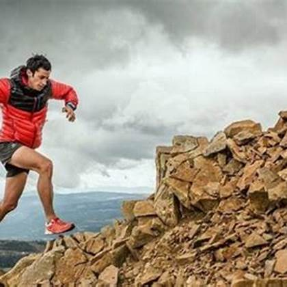
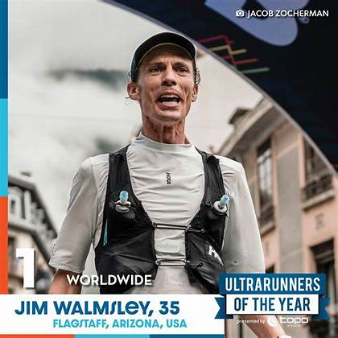
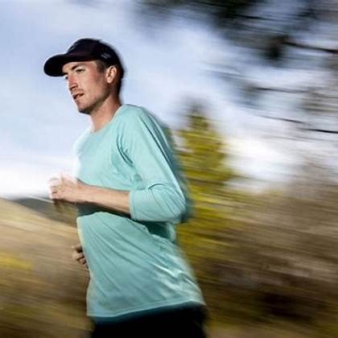
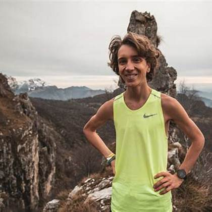
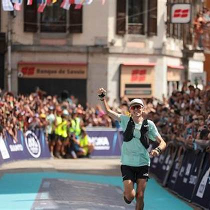
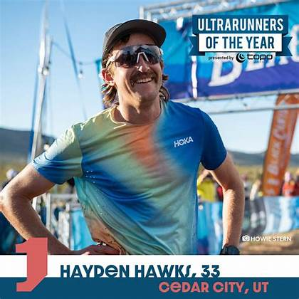
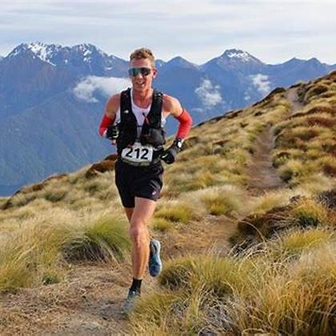
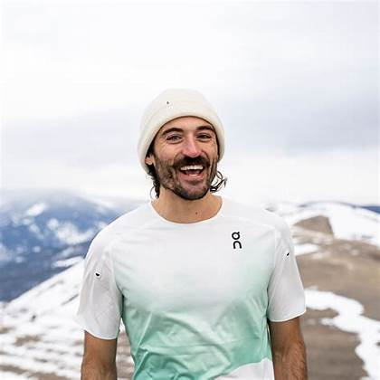
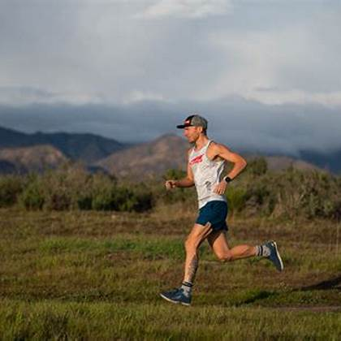
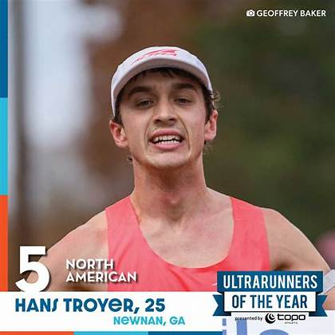
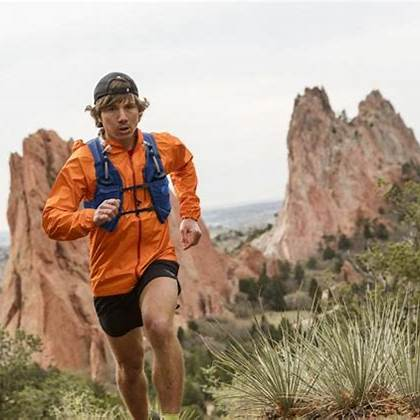
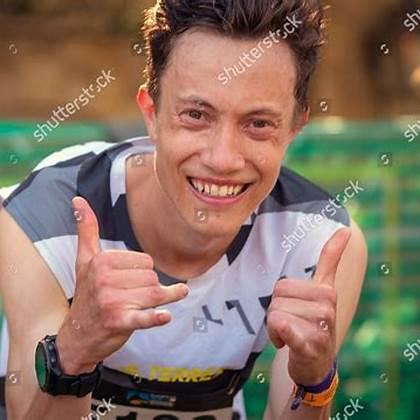
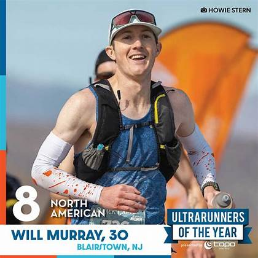
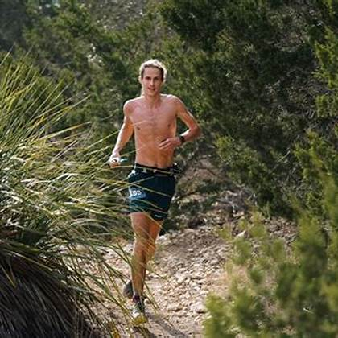
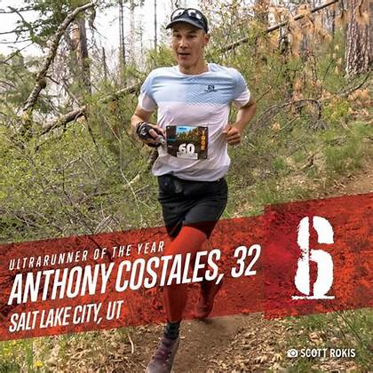
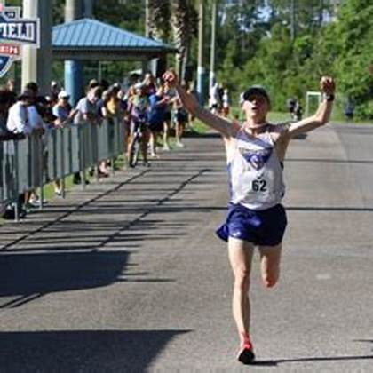
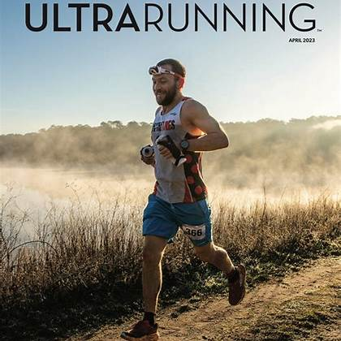
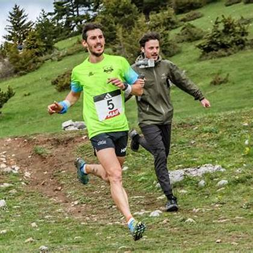
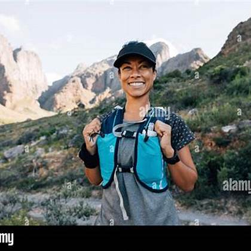
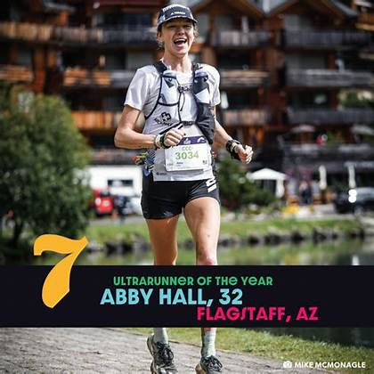
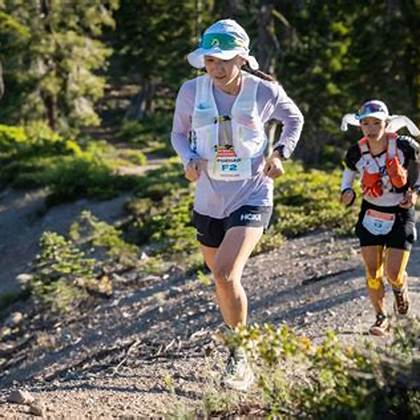
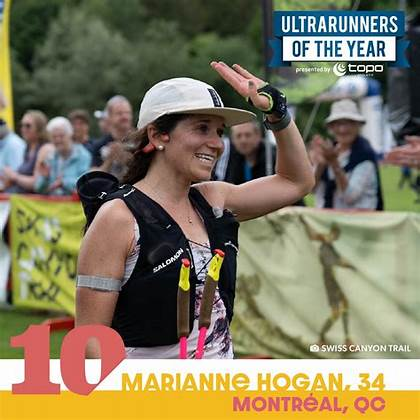
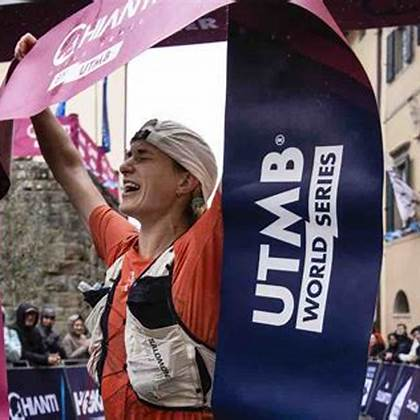
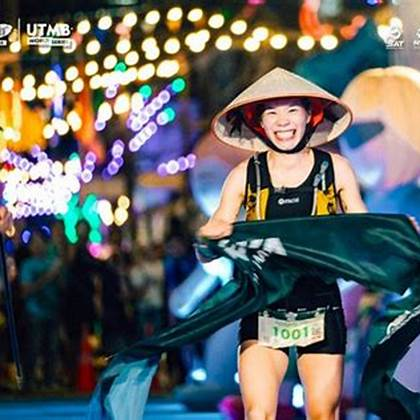
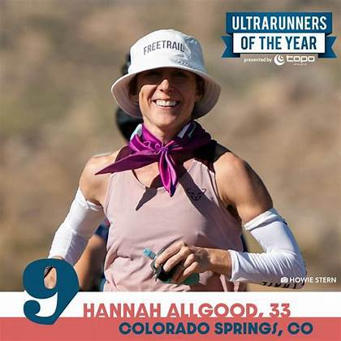
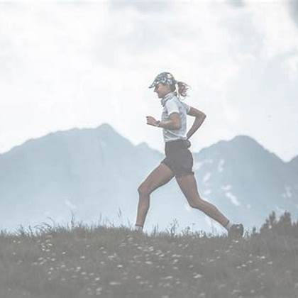
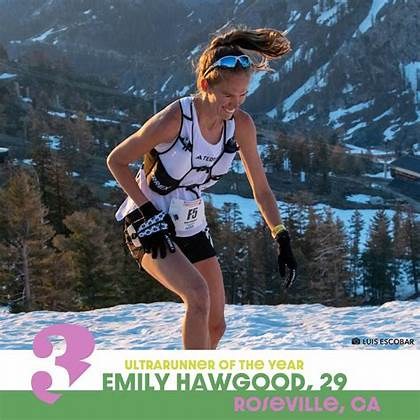
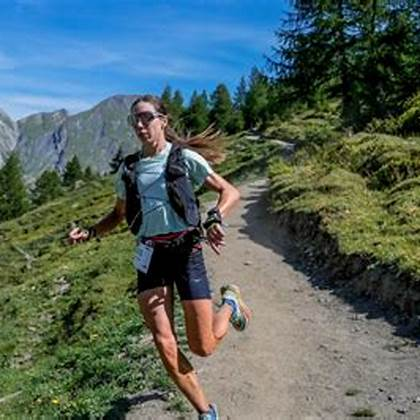
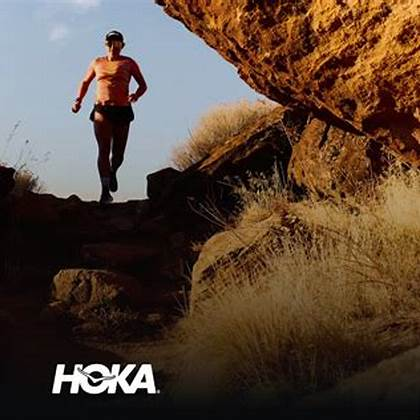
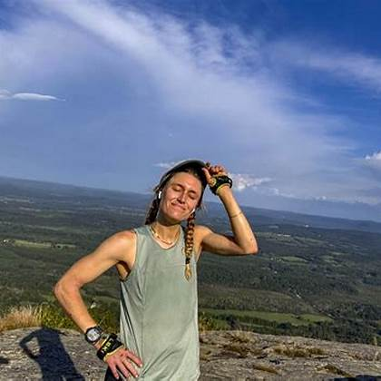
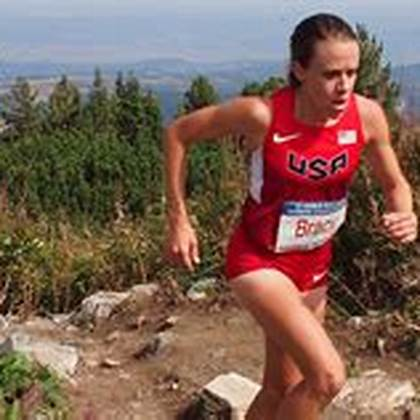
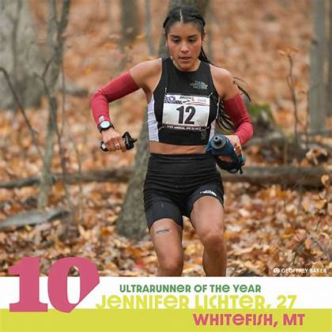
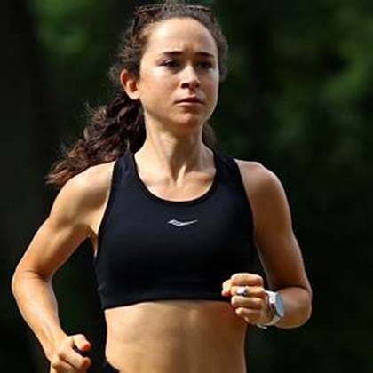
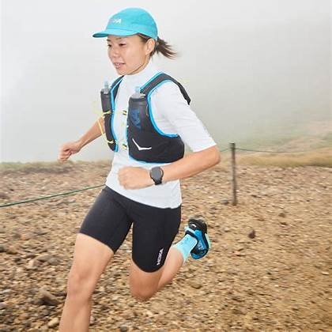
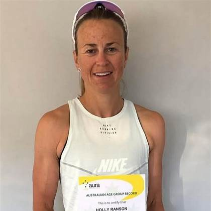
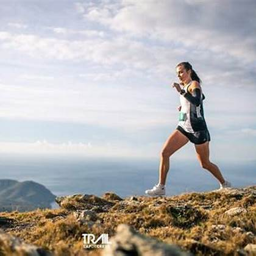
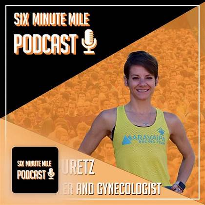
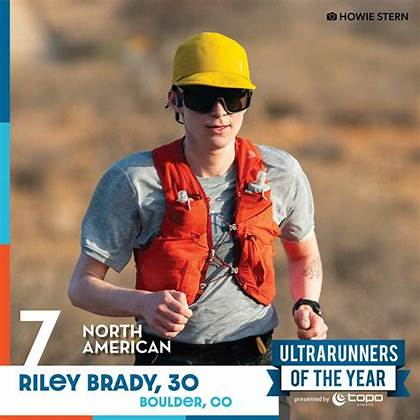
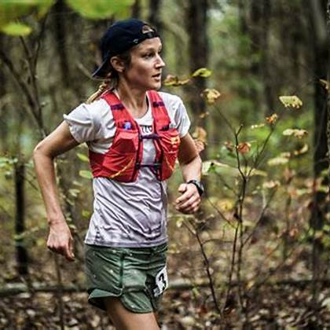
男子 · Top Ten · Bib M3
山地越野的全球标尺人物：UTMB、Hardrock、Zegama、Skyrunning、滑雪登山和高山速攀都有代表作。2010 年“Unbreakable”第三，2011 年赢下 Western States；2025 年回归仍拿第三。
公开生活里最稳定的关键词是山。Kilian 长期生活在挪威 Måndalen 一带，训练、家庭和项目都围绕山地展开；他与 Emelie Forsberg 的家庭生活也常被越野跑迷视为“把职业运动和山地日常合在一起”的代表。
2010 年 Western States 被纪录片《Unbreakable》拍成越野跑史上的经典一幕：Kilian、Geoff Roes、Anton Krupicka、Hal Koerner 同场，像四种跑法的碰撞。那一年 Kilian 还不是今天这个“山地标尺”，但他已经让美国观众看到欧洲山地跑者的技术和侵略性。
2011 年他回来赢下 Western States，意义不只是一个冠军，而是把这项美国经典百英里赛和欧洲山地越野世界真正接上。2025 年再回来拿第三，则更像一次时代对话：他面对的是被自己那一代人改变过、也变得更快的 Western States。
极强的山地效率和能量管理，擅长把技术下坡、长爬升和补给节奏合成一条线。Western States 对他最大考题不是会不会爬山，而是能否在可跑性极强的后半程和热环境里保持路跑式输出。
2025 Chianti 有公开报道提到 TFL 疼痛；赛前需观察早段步态和下坡是否保守。
少说狠话，多用行动解释“与山合作”。他不是传统意义只盯配速的选手，更像把路线当一座需要解题的山。
中文解说可说：他来不是给履历加星号，而是来测试“史上最强山地大脑”还能不能在美国最会跑的 100 英里赛道上赢。
我讲 Kilian，不会只讲他赢过多少比赛；我会把他放在 Western States 的历史变化里讲。2011 年他用 15:34 赢这里，2025 年第三却已经快了一个多小时，这说明这项运动的速度已经被整整推高了一层。
他今天最大的看点，不是会不会爬山，而是能不能把高山直觉翻译成加州百英里的高温跑动。Kilian 最强的是读地形、读身体、读风险；Western States 最会考的是可跑性、热管理和后半程肌肉损耗。
如果前半程他没有急着跟每一次加速，我不会说他保守。Kilian 很懂一场长距离比赛什么时候才真正开始，他可能是在等赛道替他筛人。
镜头里我会看两个细节：下坡是否还轻，补给是否足够主动。只要这两件事顺，他就不是在“追前面的人”，而是在等比赛回到他的控制范围。
男子 · Sponsor · Bib 46
Western States 男子现代速度革命的代表：多次冠军，2019 年 14:09:28 仍是男子纪录；2023 年成为首位赢 UTMB 的美国男子，2025 Chianti 120K 状态强势。
Jim 的公开生活和 Flagstaff、法国训练都强相关。他曾为了 UTMB 长期在欧洲山地环境中重塑自己；个人层面，他和伴侣/家庭生活较少成为公开叙事主轴，更多被讨论的是训练迁移和职业选择。
2016 年 Western States 是 Jim 传说的起点之一：他大幅领先，却在接近终点前跑错路。这个片段后来几乎成了现代 WS 最有名的“如果当年”故事，也解释了为什么他之后每一次回到这里都像带着未完成的对话。
2018、2019、2021、2024 的四次冠军把跑错路从遗憾改写成前传。尤其 2019 年 14:09:28 的纪录，把男子组想象力推到一个新层级：Western States 不再只是“熬过一百英里”，而是可以被跑成高速巡航。
前半程可以像公路赛一样给压力，后半程下坡和碎石路还能继续推进。若天气温和、无雪，他的“高速巡航”会让全场被迫跟着做选择题。
近年曾有 UTMB 失利和状态波动，但 2025 Chianti 夺冠显示竞技状态已回到顶层。
主动出击，不等别人犯错；把 Western States 当成速度实验室。
看点：当纪录保持者不用破纪录也能赢时，他会选择控场，还是一上来把比赛变成计时赛？
Jim Walmsley 的故事要从一次没赢的 Western States 讲起。2016 年那次跑错路不是一个小花边，它几乎塑造了之后观众理解 Jim 的方式：天赋、冒险、速度，还有一点命运感。
现在的 Jim 已经不是只会在美国高速赛道上开火的 Jim。2023 年 UTMB 冠军说明他完成过一次彻底改造，把自己从 Flagstaff 速度怪物，改造成能赢阿尔卑斯的选手。
今天看他，我不会只问他能不能破纪录；更重要的是，他是否需要把比赛推到纪录线附近才能赢。如果他早早领跑，全场会被迫做选择题；如果他安静待在第二集团，那可能是更成熟的版本。
Jim 的每一次节奏变化都值得播，因为他不是普通意义的前排选手，他是会改变整场比赛配速生态的人。别人加速是位置变化，Jim 加速可能是比赛性质变化。
男子 · Golden Ticket · Bib 38
2022 年完成 Canyons 100K、Western States、世锦赛长距离“三连击”式爆发；2024 伤后回归，CCC 登台；2026 通过 Canyons 100K Golden Ticket 回到起点。
Adam 的公开身份和 Missoula/蒙大拿训练环境联系紧密。家庭细节公开不多；他更常被放在“年轻冠军、伤后回归、重新建立身体信任”的叙事里。
2022 年 Adam Peterman 的爆发非常罕见：Canyons 100K、Western States、世界山地越野锦标赛长距离几乎连成一条直线。对很多观众来说，他像突然跳过了“潜力股”阶段，直接进入冠军层。
后来的伤病让这个故事变复杂。百英里冠军最难的不是证明自己曾经能赢，而是在身体出过问题后，再相信自己可以承受那种强度。这次回到 Western States，真正的戏剧性就在这里。
爬升能力、节奏感和大赛冷静度都强。关键是伤后能否承受 100 英里后 60 公里的高速下坡肌肉冲击。
公开资料显示 2023 年遭遇骶骨应力性骨折并长期恢复；这是他本届最大的背景故事。
耐心重建，不靠一场比赛证明全部；但一旦健康，他是最会把“稳”变成“快”的人之一。
解说关键词：归来。不是新人冒险，而是冠军把身体重新拼好后再回老考场。
Adam Peterman 我会用“冠军回到老考场”来讲。2022 年他第一次跑 Western States 就赢，这种开局太完美，完美到后面的伤病周期反而显得更刺眼。
他今天不是来证明天赋的，天赋早就证明过了。他要证明的是身体重新可用，训练重新完整，心理上也愿意再次把自己放进 100 英里的不确定性里。
我会特别看他的下坡和进站。如果动作干净、下坡敢放，说明他不是只靠意志回来了；如果早早开始保护身体，说明过去的伤病记忆可能还在影响决策。
Adam 的上限非常高，所以只要他前半程不乱，后半程仍在前排，我会把他重新放回冠军讨论。冠军的记忆有时候会在比赛最痛的时候醒过来。
男子 · Golden Ticket · Bib 14
意大利国际级山地跑和越野跑高手，2025 CCC 冠军级表现；从短中距离山地速度延伸到长距离，本届是 100 英里首秀。
Francesco 来自意大利 Chiavenna，公开形象里很强的一面是理性、山地文化和对跑步本身的思考。他不是高调流量型选手，更多以成绩、文字表达和欧洲山地跑背景被认识。
Puppi 有趣的地方在于，他不是传统美国百英里模板。他从山地跑、越野跑的欧洲体系走来，速度、技术和节奏判断都很强，但 Western States 会问另一个问题：你能不能把这些优势延长到 100 英里。
很多欧洲高手来到 WS 都会遇到同一件事：这条赛道看起来没有阿尔卑斯那么技术，但它太能跑、太热、太会磨股四头肌。Puppi 如果 70 英里后还在前排，就是对“100 英里经验论”的一次挑战。
技术、爬坡、节奏变化强；疑问是夜间、补给、热和最后 30 英里的肌肉耐受。
未见赛前重大近期伤病公开信息。
欧洲山地跑的精密发动机：效率、轻盈、少浪费。
一句话：他如果 70 英里后还在第一集团，所有“100 英里经验论”都会开始紧张。
Francesco Puppi 是这场男子组里最有意思的“翻译题”。他要把欧洲山地跑的语言，翻译成 Western States 的语言。
他的优势不是蛮力，而是效率和判断。他知道什么坡该跑，什么坡该放，什么节奏是假的强势。问题是，这些判断在一条热、长、后半程极可跑的百英里赛道上还能不能保持清晰。
我会在 Foresthill 之后重点看他。前半程跑得好不奇怪，真正能说明问题的是后半程还能不能把脚步落得轻、补给吃得进、情绪不被美国式高速节奏带走。
如果他还在第一集团附近，我会提醒观众：这不是欧洲选手来体验，这是一个很聪明的跑者正在破解美国最经典的百英里。
男子 · Golden Ticket · Bib 34
2024 UTMB 冠军，且曾以鞋类工程师身份爆冷震动越野圈；2025 Chianti 获得通往 Western States 的资格。
Vincent 的公开标签很特别：职业运动员之外，他曾以鞋类工程师身份被广泛报道。家庭细节公开不多；他的生活叙事更多围绕法国阿尔卑斯、工程背景和低调训练。
2024 UTMB 是 Vincent Bouillard 的成名片段：他不是赛前最大热门，却在世界最受关注的百英里之一里赢了。这种“低调工程师赢下 UTMB”的故事，几乎天然适合传播。
这个故事最有趣的地方不是职业反差，而是他赢得很实在。工程师标签让人觉得浪漫，但 UTMB 不会因为职业有趣就送冠军；他真正展示的是长时间执行计划、处理身体和赛道变量的能力。
长距离耐心极好，擅长不被声量影响，后程仍能推进。Western States 对他的考题是更快、更热、更可跑。
2025 Chianti 有公开报道提到肠胃问题；100 英里补给执行是观察点。
工程师式比赛：不浪费、不表演、把系统跑到最优。
他是“别看我低调，我已经赢过 UTMB”的那种危险人物。
Vincent Bouillard 我会先讲他的低调，然后马上提醒观众：低调不等于温和。他已经赢过 UTMB，这在任何 100 英里讨论里都是硬通货。
他的工程师故事很好讲，但不能讲成噱头。真正有价值的是：工程师式思维和百英里执行力之间确实有相通之处，分解问题、控制变量、在不确定里保持系统运行。
Western States 会给他一个和 UTMB 完全不同的题。这里的技术难度没有那么集中，但可跑性和热会持续施压。尤其胃肠管理，会直接决定他能不能把 UTMB 级别的耐力转成 Auburn 的结果。
如果 Vincent 前半程不显山不露水，我会觉得这是他的正常危险模式。等大家开始付出热和速度的代价，他这种执行型选手可能突然就靠近前排了。
男子 · Golden Ticket · Bib 40
美国越野跑高速度选手，Black Canyon、JFK、CCC 等赛事有顶尖表现；Western States 多次经验让他熟悉这里的热、峡谷和节奏。
Hayden 公开生活常和犹他州 Cedar City、高海拔训练、家庭身份联系在一起。他是美国越野圈里典型的职业跑者/家庭人形象，公开内容多围绕训练、比赛和家庭支持。
Hayden Hawks 的名字长期和速度绑在一起。他在 Black Canyon、JFK、CCC 等比赛里展示过很强的跑动能力，所以每次到 Western States，观众都会期待他把比赛变快。
但 Western States 给他的反复提醒是：速度不是越早使用越好。Hayden 的故事好看就在这里，他的发动机很强，真正的问题是油箱怎么分配到最后 20 英里。
可跑路段强，适合今年无雪和温和天气；若补给顺、不过早烧腿，是领奖台变量。
职业生涯有过伤病起伏，但赛前无明确重大伤病公开信息。
敢跑、敢压强度，但成熟版本的 Hawks 需要把锋芒留到 Foresthill 之后。
看点：他不是没速度，而是今年能不能把速度存到最后 20 英里。
Hayden Hawks 我会讲成“速度预算”的故事。他不是缺速度，他的问题从来不是有没有发动机，而是这台发动机什么时候开到最大。
Western States 对他很残酷，因为这条赛道太诱人，太容易让速度型选手觉得自己今天可以一直快。可 100 英里最会惩罚的，就是过早相信好感觉。
如果 Hayden 前半程克制，我会觉得这是好信号。真正可怕的 Hayden，不是 30 英里领先很多，而是 Foresthill 之后还能够把路跑速度拿出来。
他每一次进站我都会看动作快不快、眼神清不清。速度型选手一旦补给和降温没掉线，后面就可能把一堆看似更稳的人重新超回来。
男子 · Top Ten · Bib M5
新西兰顶尖越野跑者，2024/2025 Western States 均进入前列，2025 官方媒体稿点名为回归强者。
Daniel 来自新西兰 Wellington，公开资料中家庭生活曝光不多。他的个人叙事更多是新西兰山地耐力、国际赛场稳定输出，以及连续适应 Western States。
Daniel Jones 的“故事”不是靠一个爆炸片段，而是靠连续出现。2024、2025 都在 Western States 前排，这说明他不是一次性适应，而是真的读懂了这条赛道。
他很像直播里的静音强者：镜头可能不总追着他，但计时点一出来，你会发现他还在那里。这种存在感在百英里里非常可怕。
下坡和长时间稳定输出是强项；熟悉赛道后，第三次/第四次经验会让他少交学费。
未见赛前重大近期伤病公开信息。
低调高效型，少镜头但不掉线；越到后面越难甩。
他像比赛里的“静音模式”：不吵，但你一看榜单，他还在。
Daniel Jones 我会反复提醒观众不要漏看。不是所有强者都用领跑证明自己，有些人用“不消失”证明自己。
新西兰山地背景给他很好的耐力底色，但 Western States 真正奖励的是把这种底色变成一整天的稳定决策。Daniel 已经证明过自己能做到。
如果他在前半程第五到第八之间，看起来不抢镜，我会觉得这是他的理想位置。强场里最贵的不是没上镜，而是太早上镜。
到了过河之后，如果 Daniel 还在前排附近，我会把他列为真正威胁。因为那时比赛不再奖励简历，而是奖励前面几十英里少犯错的人。
男子 · Top Ten · Bib M4
2025 Western States 第四名，从 Missoula 跑者群体中杀出；官方媒体稿将其列为男子竞争核心之一。
Jeff 来自 Montana/Missoula 训练圈，公开家庭信息不多。他更常被提到的是职业跑者身份、山地环境和 2025 年在 Western States 的突破。
2025 年 Jeff Mogavero 的第四名，是那种会改变别人看法的成绩。赛前他不是最大牌，但跑完以后，所有前排预测都必须给他留位置。
Missoula 这个训练环境也值得讲。近年很多强手从这里出来，它不像传统大城市体育中心，更像一个山地耐力社区，训练资源、同伴压力和生活方式都在塑造选手。
已经证明能处理 Western States 全流程。第二次参赛的优势在于知道哪里要忍、哪里该吃、哪里可以真正开火。
未见赛前重大近期伤病公开信息。
务实、耐心、后程执行力强。
他不是最大牌，但 2025 已经给所有大牌递过名片。
Jeff Mogavero 我会叫他“已经递过名片的人”。去年第四名不是运气，Western States 不会让人靠运气在男子强场里跑到第四。
今年他的挑战反而变了：去年他可以是惊喜，今年别人会认真计算他。黑马变成被研究对象，这本身就是一种压力。
我会看他是不是继续保持 2025 那种不浮夸的推进方式。如果他不急着证明自己，说明他知道这条赛道怎么给自己留空间。
强场里，Jeff 这种选手很危险，因为他不需要制造大新闻。他只要一直在，等别人开始出问题，他的名次就会自己变好。
男子 · Top Ten · Bib M7
多次 Western States 前十级别表现，稳定性和赛道理解是核心资产。
Ryan 的公开身份包括顶尖越野跑者、LGBTQ+/非二元运动员代表之一，以及长期参与跑步社群倡议。家庭细节公开较少；其个人生活叙事更常围绕身份可见度、训练和社群。
Ryan Montgomery 的故事有竞技和文化两条线。TA 在 Western States 的经验说明这不是“话题型参赛”，而是真正能在顶级赛道竞争的运动员。
在传统很强的百英里赛事里，Ryan 的存在也让观众看到这项运动正在变宽。重要的是，这种叙事不能替代竞技能力，而是和竞技能力同时成立。
熟悉峡谷热、补给点节奏和后半程心理波动；如果前方互相消耗，他具备捡名次的能力。
未见赛前重大近期伤病公开信息。
把 100 英里拆成可执行的小任务，少犯错就是进攻。
这种选手适合提醒观众：Western States 不只奖励天才，也奖励会活到最后的人。
Ryan Montgomery 我会认真讲，不会只讲身份，也不会回避身份。TA 的特别之处正在于：竞技能力和可见度同时存在。
Western States 对 Ryan 来说不是第一次见世面。三次完赛/前排经验意味着 TA 知道这条赛道会在哪些地方骗你，也知道什么时候该让别人先热闹。
我会特别关注 Ryan 在前十边缘的位置。如果 TA 不急着回应第一集团，而是稳定压在可见范围内，那是很成熟的打法。
到了后半程，Ryan 的故事会重新回到最纯粹的百英里问题：还能不能吃、还能不能跑、还能不能在痛感里做正确决定。身份让故事更宽，表现让故事站得住。
男子 · Top Ten · Bib M8
年轻上升期选手，2025 已在 Western States 前十站稳，2026 继续以 Top Ten 身份回归。
Hans 公开生活资料相对有限，官方名单显示其城市为 Newnan, Georgia。作为年轻上升期选手，他的公开叙事主要集中在成绩突破和从新面孔变成 Top Ten 回归者。
Hans Troyer 的关键故事是身份转换：第一次跑进前十时，你可以是惊喜；第二年带着 M8 回来，你就成了被别人标记的人。
年轻选手在 Western States 最有戏剧性的地方，是身体状态常常很好，但比赛会不断诱惑你太早使用它。Hans 的看点就是能不能把冲劲和耐心放在同一个身体里。
年轻、有速度，关键是不要被前面传奇名字带到超预算配速。
未见赛前重大近期伤病公开信息。
上升期最可怕的是还不知道自己的天花板。
他如果前半程忍住，后半程可能让“老熟人们”很难受。
Hans Troyer 今年我会讲成“第二次证明”。第一次进前十是突破，第二次守住甚至往前，才会让人相信这是稳定层级。
他年轻，这当然是优势，但在 Western States 年轻不是免死金牌。年轻意味着恢复快、速度好，也意味着前半程的好感觉可能特别会骗人。
如果 Hans 前 30 英里很冷静，我会把这视为成熟信号。前十回归者最需要的不是更响亮，而是更准确。
后半程如果他还能维持跑姿，我会提醒观众：这就是新一代选手真正接班的方式，不是喊出来，是在 Auburn 前把名次守出来。
男子 · Top Ten · Bib M10
日本选手，2025 Western States 前十，代表亚洲男子在顶级 100 英里赛场的硬实力。
Hiroki Kai 来自日本东京，公开家庭资料较少。个人生活信息主要围绕日本长距离跑文化、训练纪律和国际百英里赛场表现。
Hiroki Kai 跑进 Western States 前十，对亚洲观众很重要。它不是“亚洲选手参赛”这种宽泛叙事，而是已经在世界最硬的百英里之一里进入前排。
日本长距离跑文化强调节奏、纪律和细节，这些特质放到 Western States 后半程很有意义。尤其当别人开始乱的时候，能按计划持续推进的人会越来越值钱。
纪律性、补给执行和节奏稳定值得期待；西部炎热环境和高速后半程仍是关键。
未见赛前重大近期伤病公开信息。
东方耐心遇上美国高速赛道。
中文解说可以把他作为亚洲观众的自然关注点：低调但非常能磨。
Hiroki Kai 我会用“安静但很硬”来讲。Western States 不一定奖励最会制造声量的人，但非常奖励最能持续执行的人。
他已经跑进过前十，所以今天不是来证明亚洲选手能不能跑，而是看他能不能把这个位置坐稳。这个区别很重要。
我会观察他的补给站动作和下坡姿态。日本选手常见的节奏纪律，如果能和主动降温结合起来，后半程会非常有价值。
如果比赛开始洗牌，Hiroki 这种选手特别值得看。混乱时最贵的是不跟着乱，而他最有可能用稳定把名次一点点磨出来。
男子 · Golden Ticket · Bib 39
以硬派进攻闻名，CCC、North Face 50 等经典战绩让他成为越野跑最有辨识度的攻击型选手之一。
Zach 的公开生活和 Colorado/Manitou Springs、硬派训练和山地社群相关。家庭信息公开不多；他更广为人知的是鲜明个性、进攻跑法和在 Chamonix/美国赛事中的高辨识度。
Zach Miller 的经典故事不是一个固定片段，而是一种跑法：不等比赛发生，他自己让比赛发生。很多越野迷记住他，是因为他敢从很早就把比赛点燃。
这种风格让他成为解说员最喜欢也最头疼的选手。喜欢是因为他在场比赛不会无聊；头疼是因为百英里不会总奖励漂亮进攻，它会问你最后还剩多少。
如果比赛需要有人打破和平，他永远是候选人；风险是 Western States 后程会惩罚过早透支。
职业生涯有过伤病和恢复期；赛前需看是否能把攻击性和耐心平衡。
不爱温吞，喜欢把比赛跑成故事。
他在场，比赛通常不会无聊。
Zach Miller 一出现，我就会提醒观众：这场比赛可能不会按教科书走。他是那种会改变比赛温度的人。
他的魅力就是进攻，他的风险也是进攻。Western States 不是 50K，不是 100K，甚至不是一场只要气势够就能顶过去的比赛；这里会把每一次提前用力都记账。
如果 Zach 早早在前面，我不会惊讶。我会问的是，这次的进攻有没有后续，补给有没有跟上，腿有没有在峡谷之后还能工作。
但也正因为这种不确定，他特别值得播。很多选手是在比赛里寻找机会，Zach 往往是自己制造机会。只要他还在前排，比赛就有火药味。
男子 · Golden Ticket · Bib 16
美国新生代长距离越野选手，Golden Ticket 晋级，具备在强场中突围的速度。
Jeshurun Small 官方名单显示来自 Golden, Colorado，公开家庭信息较少。作为 Golden Ticket 选手，他的个人叙事目前更偏向新生代、近期状态和科罗拉多山地训练背景。
Jeshurun Small 的故事适合从 Golden Ticket 讲起。这个门票不是名气票，而是近期状态票；能拿到它，说明他刚刚在高强度资格赛里把门敲开。
对很多观众来说，他可能还是陌生名字，但 Western States 经常让陌生名字变成终点线上的重要人物。黑马不是没有资料，而是大众还没来得及认识。
需要把资格赛速度转换成 100 英里耐心；若天气温和，首秀黑马价值更高。
未见赛前重大近期伤病公开信息。
敢在强手场里抢票，本身说明心理硬度。
观众不熟，但前十预测里不能漏掉这种“刚抢到门票的人”。
Jeshurun Small 我会作为真正的黑马线来播，但不会乱喊黑马。Golden Ticket 已经说明他的状态是真实的。
他最大的考题是第一次面对 Western States 强场时，能不能不被大牌节奏带走。很多新面孔不是能力不够，而是太早想证明自己够。
如果他前半程在前十边缘，我会先保留判断；到了 Foresthill 之后还在，那就必须认真讲他的名字。
这种选手最能让直播变新鲜。观众一开始可能不熟，随着计时点稳定，他的名字会一点点从背景变成故事主线。
男子 · Golden Ticket · Bib 19
2025 Javelina Jundred 男子赛道纪录级表现，凭高速 100 英里能力拿到 Golden Ticket。
Will Murray 公开资料显示来自 Bellingham, Washington，家庭信息不多。个人生活叙事主要围绕西北训练环境、高速 100 英里能力和 Javelina 表现。
Will Murray 的 Javelina 背景很关键。Javelina 是高速、可跑、节奏感很强的百英里；能在那里跑出纪录级表现，说明他有长时间维持跑动的能力。
Western States 和 Javelina 不是同一题，但有相通处：后半程必须能跑。差别在于 WS 多了更重的爬升、下坡损伤和热管理。
从沙漠高速 100 英里来到 Sierra 峡谷，优势是能跑，考题是爬升、下坡肌肉和技术变化。
未见赛前重大近期伤病公开信息。
高速型 100 英里选手，最怕被低估。
如果今年真是快天，他的 Javelina 背景会变得很有用。
Will Murray 我会从“高速百英里能不能迁移”讲起。他的能力不是抽象潜力，而是已经在 Javelina 这种可跑百英里里证明过。
如果今年天气和路况偏快，他的简历会变得更值钱。因为当比赛进入持续跑动阶段，路跑式巡航能力会开始收利息。
但 Western States 会比 Javelina 更会拆身体。峡谷段的热、长下坡的股四头肌损伤、过河后的残酷跑动，都会问他另一个层面的问题。
如果 Will 前半程没有被山地强者甩开，后半程我会越来越关注他。那时比赛可能开始进入他熟悉的高速百英里语言。
男子 · Golden Ticket · Bib 20
美国 Appalachian/东南山地背景跑者，Golden Ticket 晋级，名字和项目气质很搭。
Canyon Woodward 官方名单显示来自 Franklin, North Carolina。公开家庭资料较少；他的个人叙事常和美国东南/阿巴拉契亚山地、环保/社区背景和长距离 trail 文化联系在一起。
Canyon 这个名字本身就很适合 Western States，尤其当比赛进入 canyons 段时，解说几乎不可能不提。但名字之外，他的东部山地背景也很有意思。
阿巴拉契亚式山地和加州 Sierra/Canyons 不是同一种路，但都要求耐心、湿热或热环境处理、长时间小坡度折磨。Canyon 的看点就是能不能把这种背景转换过来。
擅长崎岖山地和耐心推进；Western States 的高速度平路/缓下坡会检验转换能力。
未见赛前重大近期伤病公开信息。
社区、山地、韧性型选手。
名字叫 Canyon，结果要跑进真正的 canyons，这个梗可以留到 Devil’s Thumb。
Canyon Woodward 我会把名字梗讲出来，但不会停在梗上。真正的看点是美国东部山地跑者来到西部百英里的转换。
他不一定是最大牌，但 Golden Ticket 选手最危险的地方就在这里：赛前声量不大，近期状态却很真实。
我会在峡谷段观察他。这个赛段会把爬升、热和下坡损伤堆在一起，如果他还能保持动作，说明适配很好。
如果他到后半程还在前十附近，故事会很自然：名字叫 Canyon 的人，真的在 Western States 的峡谷里把自己跑进了镜头。
男子 · Golden Ticket · Bib 24
美国强力越野/公路混合型长距离跑者，有 Western States 经验，也有 Golden Ticket 证明近期状态。
Anthony Costales 来自 Salt Lake City，公开家庭资料有限。他的个人背景常被放在美国西部训练环境、公路速度和 trail/ultra 混合能力中理解。
Anthony Costales 的有趣之处是混合型能力。Western States 不是最技术的百英里，它非常需要跑动，所以有公路/高速基础的选手会在后半程有机会。
他不是直播里最容易被第一时间提到的名字，但这种选手常常在 60 英里之后变重要。当前面山地型选手开始跑不起来，可跑型选手的价值会放大。
经验和速度兼具，适合在第二集团稳住，等待前方爆点。
未见赛前重大近期伤病公开信息。
不必每次都抢镜，但可以一直在危险位置。
这类选手最适合在直播中提醒：别只看第一集团。
Anthony Costales 我会提醒观众别只看第一集团。Western States 的名次经常不是从头到尾都在镜头中央的人拿完的。
他的优势在可跑性。Salt Lake City 和美国西部训练背景给他山地基础，而速度能力让他在后半程有机会把别人吃回来。
我会看他是否把前半程控制在舒服范围内。如果他早早追着大牌跑，风险很高；如果他把自己保存在前十可见范围，后面会越来越有用。
Anthony 的比赛可能不是一开始最有戏剧性，但很适合在中后段追踪。百英里里，真正会跑的人常常在别人只能走的时候变得非常危险。
男子 · Golden Ticket · Bib 26
Golden Ticket 选手，代表美国新一批速度型 trail/ultra 竞争者。
Jordan Bramblett 官方名单显示来自 Paulden, Arizona，公开家庭资料较少。个人叙事主要围绕美国西南训练环境、Golden Ticket 和新一代 trail/ultra 竞争者身份。
Jordan Bramblett 对很多观众来说可能是新名字，这正是 Golden Ticket 体系的价值：它不断把近期状态最硬的人送到 Western States 起点。
Arizona/美国西南环境意味着他对干热和开放地形可能不陌生。Western States 不会因此变简单，但至少热这个变量值得放进他的优势清单。
首战最大变量是补给和情绪管理；不被大场面带飞，才有进前十空间。
未见赛前重大近期伤病公开信息。
先把门票抢到，再把名字跑进大众视野。
黑马型介绍：今天也许是很多观众第一次记住这个名字。
Jordan Bramblett 我会作为“今天可能被记住的名字”来讲。强场里总会有人赛前不响，赛后大家开始查他的资料。
他最大的挑战是大赛节奏。Golden Ticket 证明他能跑，但 Western States 的前排不只是跑快，还要在一堆冠军和纪录保持者旁边保持自己的判断。
如果他前半程看起来不慌，我会很看重。新面孔最难得的不是敢冲，而是敢不冲。
中后段如果 Jordan 还在前十边缘，我会把他从黑马线升级成正经竞争者。那时他不是“有潜力”，而是在现场兑现潜力。
男子 · Golden Ticket · Bib 29
Golden Ticket 晋级，湾区/加州训练环境对赛道气候和地形适应有帮助。
Jacob Banta 官方名单显示来自 Mill Valley, California，公开家庭资料有限。个人生活和训练环境可联系到湾区/Marin 山地跑文化，这对 Western States 地形和气候适应有帮助。
Jacob Banta 的看点是本地化适配。Mill Valley/Marin 一带有很深的 trail running 文化，很多训练路线本身就带着加州山地跑的味道。
Western States 很会奖励熟悉加州热、尘土、补给节奏和长下坡的人。Jacob 不一定有最大国际履历，但他可能更熟悉这条赛道背后的环境语言。
本地化适应是优势；关键是能否在国际强场中守住节奏。
未见赛前重大近期伤病公开信息。
把熟悉地形转化为比赛执行。
他不是最响的名字，但可能是最熟悉加州味道的人之一。
Jacob Banta 我会从“加州味道”讲起。Western States 不是抽象的 100 英里，它有具体的尘土、热风、林道、峡谷和补给站节奏。
他来自 Mill Valley，这种训练环境不会自动给名次，但会让很多赛道变量少一点陌生感。对 Golden Ticket 选手来说，少一个陌生变量就很值钱。
我会看他在热起来之后的表现。如果别人开始被环境打乱，而他还能稳定进站、稳定下坡，那就是本地适配在兑现。
Jacob 的最佳剧本不是开场抢镜，而是一步步让观众发现：这个人好像一直没掉。Western States 很喜欢这种故事。
男子 · Golden Ticket · Bib 33
法国高水平越野跑者，欧洲技术山地背景强，Golden Ticket 进入 Western States。
Thomas Cardin 来自法国 Cognin，公开家庭资料不多。个人背景主要与法国 trail、欧洲山地训练和技术型路线经验相关。
Thomas Cardin 是典型欧洲高手来解美国题。法国 trail 体系里的选手通常不怕爬升和技术路，但 Western States 的难点偏偏在于它后半程太能跑。
欧洲选手在 WS 的故事经常有反差：赛道看上去不如阿尔卑斯技术，却因为热和持续跑动变得非常残酷。Thomas 的看点就是能不能把欧洲能力换算成美国百英里效率。
欧洲选手常见优势是技术和爬升，Western States 则要求“下坡后还能跑马拉松”。
未见赛前重大近期伤病公开信息。
技术流进入速度场。
他能不能把阿尔卑斯逻辑翻译成加州峡谷语言，是看点。
Thomas Cardin 我会用“翻译能力”来讲。不是能力够不够，而是能力怎么换算。
他的技术山地背景会让他在某些路段很舒服，但 Western States 最后问的是持续跑动、补给和热管理。欧洲强者如果忽略这一点，很容易被这条看似可跑的赛道消耗。
如果 Thomas 在前半程不急着证明欧洲速度，而是把自己留在前十范围，我会觉得这是成熟信号。
到了 Foresthill 之后，如果他还能跑得顺，我会提高他的权重。因为那说明他已经把欧洲山地语言翻译成了加州百英里语言。
男子 · Golden Ticket · Bib 30
23 岁的新西兰年轻 Golden Ticket 选手，是男子精英组最年轻的高潜力面孔之一。
Maximillian Yanzick 来自新西兰 Oamaru，23 岁，是名单中非常年轻的高潜力选手。公开家庭资料少；个人叙事主要围绕年轻、山地背景和 Golden Ticket。
Maximillian 的年龄本身就是故事。23 岁进入 Western States 精英讨论，说明他已经跑出了足够硬的资格，但百英里会用很长的时间考验年轻选手的判断。
年轻选手最容易给比赛贡献剧情：身体真的好，状态真的好，但 Western States 最擅长把“我感觉特别好”翻译成“你确定要这么早花掉吗”。
年轻意味着恢复和无畏，也意味着 100 英里经验可能不足；配速纪律决定上限。
未见赛前重大近期伤病公开信息。
年轻人的比赛哲学常常很简单：不知道怕，所以敢。
如果他前半程太兴奋，可以幽默提醒：Western States 专治“我感觉特别好”。
Maximillian Yanzick 我会讲成“年轻但不能只讲年轻”。年轻是优势，也是风险。
他的身体上限可能很高，新西兰山地背景也给他耐力底子，但 Western States 不会因为潜力给折扣。它会要求他每一小时都做成熟决定。
我会特别看前半程。如果他太早冲到非常靠前的位置，我会担心；如果他在合理范围里稳定推进，那反而更危险。
年轻选手最漂亮的比赛，不是前 30 英里惊艳，而是 80 英里之后大家发现他还没交学费。Maximillian 如果做到这一点，今天就会被很多人记住。
女子 · Top Ten · Bib F1
2025 Western States 冠军，16:37 为女子历史第四快；Flagstaff 训练背景，近年从国际大赛到 100 英里持续成熟。
Abby Hall 长期以 Flagstaff 训练环境、山地社群和职业越野跑者身份被认识。家庭细节公开不多；她的个人生活叙事更多围绕高海拔训练、耐心积累和从国际大赛到百英里的成熟。
2025 年 Abby Hall 赢 Western States，不是突然冒出来的童话，而是多年在高水平 trail 中积累后的一次兑现。16:37 的成绩把她放进女子历史非常快的区间，也让 F1 号码布有了真正重量。
Chianti 赛中出现过胃肠/停顿相关插曲，这个细节很适合直播里讲：冠军也不是无敌的，百英里里厕所、肠胃、进站细节都可能改变比赛。Abby 的价值在于，她知道这些问题出现时怎么把损失降到最低。
去年证明她能在热、峡谷和后程压力里做正确选择。今年身份从追逐者变成卫冕者，战术上可能更有耐心。
赛前未见重大近期伤病公开信息；2025 Chianti 曾有肠胃/停顿影响报道。
强而不躁，擅长把“今天身体给我的东西”最大化。
她不是来讲童话的卫冕冠军，她是带着上一年答案卷回考场的人。
Abby Hall 今年不是来讲励志故事的，她是带着答案卷回来的卫冕冠军。去年她不只是赢了，还跑出了女子历史前列时间。
卫冕冠军最难的是身份变化。去年她可以追，现在所有人都拿她当参照物；她的一次加速、一点掉速，都会被别人解读。
我会看她是否愿意让比赛先乱。真正成熟的卫冕，不是从第一英里开始证明自己，而是在最该出手的时候出手。
如果 Abby 中段进站仍然干净、表情仍然稳定，我会认为她还是冠军讨论的中心。F1 号码布不是装饰，是所有人都盯着的靶心。
女子 · Top Ten · Bib F2
中国越野跑代表人物，2024 跑出女子历史第三快级别成绩，2025 再获第二并进入历史前列。
向付召来自中国浙江德清，是中文观众最自然关注的核心选手。公开家庭资料不多；她的个人叙事更多与中国越野跑崛起、连续两年 WS 第二和国际百英里前排竞争相关。
向付召连续两年在 Western States 跑到女子第二，这件事本身已经足够有分量。它不是“亚洲选手表现不错”，而是她已经连续把自己放在冠军竞争旁边。
2025 年 CTS 对她的故事有专门报道，中文解说可以把她讲成一个真正的冠军挑战者，而不是民族情绪包装出来的看点。她离冠军不是“差一点运气”，而是连续两年把冠军逼到认真。
非常擅长稳定推进和后程追击；热适应、补给熟悉度和在 Auburn 的赛前适应是她的武器。
CTS 赛后文提到她重视防伤训练、力量和热适应；未见重大赛前伤病公开信息。
不靠夸张开局，而靠持续压迫。越到后面，她越像一支慢慢拧紧的螺丝。
中文解说核心人物：她离冠军不是“差一点运气”，而是已经连续两年把冠军逼到认真。
讲向付召，我会很直接：她不是来参与国际大赛的中国选手，她是来争冠军的选手。
连续两年 Western States 第二，说明她和这条赛道的适配已经被验证。她知道这里哪里会热，哪里会掉腿，哪里必须吃，哪里不能急。
今年最大问题不是她能不能进前十，而是她什么时候、用什么方式向冠军发起压力。如果她到 Foresthill 还咬得很近，整场中文直播的情绪会自然起来。
我会避免把她讲成单纯的“中国希望”。她首先是世界级百英里选手，然后才是让中文观众特别投入的中国选手。这个顺序很重要。
女子 · Top Ten · Bib F3
加拿大顶尖长距离越野跑者，UTMB/Western States 均有顶级成绩；2025 Western States 第三。
Marianne Hogan 来自加拿大魁北克，公开家庭信息较少。她的个人生活叙事更多围绕加拿大长距离越野、医疗/健康背景和国际百英里稳定表现。
Marianne Hogan 的故事常常不是最响的开场，而是很硬的终局。她在 UTMB 和 Western States 都有顶级成绩，说明她不是只适应一种赛道。
2025 年 WS 第三让她继续站在女子组核心位置。她给人的感觉是镜头可能一段时间没拍到，但到了终点和榜单前排，总能看到她。
长距离经验丰富，不怕慢热；如果前两位互相盯防，她有能力用稳定后程接近。
过往公开资料曾提到较长恢复/伤病阶段；赛前需关注状态连续性。
成熟、耐心、抗波动。
她是那种你以为掉出镜头，结果终点又在领奖台的人。
Marianne Hogan 是我会一直放在雷达上的选手。她不一定用最戏剧化的方式出现，但她太懂长距离了。
加拿大和国际百英里履历给她的不是单点速度，而是处理一整天问题的能力。Western States 这种比赛，后半程很多时候比的是谁的问题更少。
如果她在中段没有被 Abby、向付召这些名字拉开太多，我会认为她还在比赛里。Marianne 的强项是让自己一直有选择权。
到了过河之后，她这种选手会变得更危险。别人开始慌的时候，经验型选手可能只需要继续做正常动作，名次就会往前来。
女子 · Top Ten · Bib F5
英国选手，2025 Western States 第五；官方媒体稿点名为女子前排回归者。
Fiona Pascall 来自英国 Taunton，公开家庭资料不多。个人叙事主要与英国/欧洲 trail、Chianti 夺冠和 2025 WS 前五经验相关。
Fiona Pascall 的 2025 Western States 第五名很值钱，因为这是在强场和高压赛道里拿到的前排成绩。她不是只靠资格赛故事进入名单，而是已经在 Auburn 证明过。
2025 Chianti 120K 女子冠军又给她的 2026 增加了近期状态证据。这个组合很关键：去年会跑 WS，今年状态也在线。
已完成一次赛道学习，第二年更知道何时忍热、何时吃、何时加速。
未见赛前重大近期伤病公开信息。
低调、执行、把错误率降到最低。
她不是标题最大的人，但前五经验在 Western States 很值钱。
Fiona Pascall 我会比普通观众更早提。她有 Western States 第五，也有 Chianti 冠军，这不是边缘前十候选，是很实在的前排威胁。
她的背景来自英国/欧洲 trail，但她已经证明自己能适应 Western States。现在问题不是能不能适应，而是能不能更进一步。
我会看她在前半程是否保持耐心。女子组前面太强，如果早早硬跟，风险很大；如果她把自己放在前五到前八的合理区间，后面就有机会。
Fiona 的比赛可能不会最吵，但前五经验在这条赛道很值钱。Auburn 不奖励声量，奖励一天里的正确选择。
女子 · Top Ten · Bib F6
越南选手，2025 Western States 前十，代表东南亚越野力量进入世界顶级 100 英里视野。
Hau Ha 来自越南 Sapa，公开家庭资料较少。她的个人叙事自然连接到东南亚山地、热环境适应和亚洲女子在世界百英里前排的存在感。
Hau Ha 的 2025 Western States 前十很重要，因为它让女子前排不再只是欧美叙事。越南选手跑进 WS 前排，本身就是这项运动全球化的具体画面。
Sapa 的山地背景和东南亚环境，让她在热、湿、长时间爬降方面有自己的身体经验。Western States 的热不一样，但“在热里继续做事”的能力很值得讲。
热环境适应可能是优势；关键是高速可跑段和后半程肌肉耐受。
未见赛前重大近期伤病公开信息。
稳扎稳打，少犯错就能继续向前。
亚洲观众可以特别关注：她让女子前十不再只是欧美叙事。
Hau Ha 我会作为亚洲女子的重要线索来讲。她不是来体验 Western States，她已经跑进过前排。
她最大的看点是能不能把 2025 的成功变成稳定层级。第一次前十是突破，第二次还在前排，就是位置。
我会在峡谷段关注她。热环境下，谁还能吃、还能降温、还能跑，谁就会慢慢把名次稳住。
对中文观众来说，Hau Ha 也值得认识。她和向付召、Honoka 这些名字一起说明，亚洲女子越野已经不只是单点故事。
女子 · Top Ten · Bib F7
美国科罗拉多系耐力选手，2025 Western States 前十后回归。
Hannah Allgood 官方名单显示来自 Colorado Springs，公开家庭资料不多。个人叙事主要围绕科罗拉多山地训练、稳定型耐力和 2025 WS 前十。
Hannah Allgood 的故事关键词是稳定。2025 年跑进 Western States 前十后，她今年面对的是另一种难度：别人已经知道她能跑。
科罗拉多训练背景给她山地耐力和高海拔基础，但 WS 会把问题换成热、长下坡和持续跑动。她的看点就是能不能把稳定性再次复制。
高海拔训练背景有帮助；需要把爬坡能力转化为后程可跑速度。
未见赛前重大近期伤病公开信息。
稳定输出型，不一定华丽，但适合 100 英里。
她的价值在于：比赛乱起来时，稳定本身就是武器。
Hannah Allgood 我会把“稳定”讲得更有力量。百英里里的稳定不是无聊，是一种攻击方式。
去年她跑进前十，今年最重要的是确认这不是一次性成绩。Top Ten 回归者的压力在于，你已经不能躲在黑马位置了。
我会看她是否在前半程避免过度反应。女子组强者很多，硬跟每一次变化不一定聪明。
如果 Hannah 到后半程还在 F7 附近甚至往前，我会提醒观众：这就是稳定的价值。别人交学费的时候，她还在按计划跑。
女子 · Top Ten · Bib F8
国际越野强手，技术山地和长距离均衡，2025 Western States 前十。
Caitlin Fielder 官方名单显示为 Andorra/NZL 背景，公开家庭资料较少。她的个人生活叙事常和欧洲山地训练、技术路线和国际 trail 赛事联系在一起。
Caitlin Fielder 像一个多语种跑者：能读技术山，也要读 Western States 的加州热。2025 年前十说明她已经成功翻译过一次。
Andorra/欧洲山地背景让她不怕技术和爬升，但 WS 的难点是后半程太能跑。她的故事在于第二年能不能把转换做得更熟。
欧洲山地训练让她技术强；若今年无雪且天气温和，速度要求更高。
未见赛前重大近期伤病公开信息。
灵活、技术、国际化比赛经验。
她像多语种选手：能读山，也要读加州热。
Caitlin Fielder 我会讲“转换能力”。她有技术山地背景，但 Western States 要求她长时间保持跑动效率。
她去年已经进前十，所以今年不是猜测她能不能适应，而是看她能不能利用经验把名次往前推。
我会看她的下坡姿态。技术型选手如果股四头肌保存得好，后半程下坡可能反而成为优势。
如果她中段补给和降温都做得主动，我会把她放进稳定前十甚至更高的讨论。Western States 对会学习的选手很友好。
女子 · Top Ten · Bib F10
津巴布韦选手，Western States 老熟人，2024/2025 都在女子前列，是赛事稳定性最强的国际面孔之一。
Emily Hawgood 来自津巴布韦，长期在美国 trail/ultra 圈训练和比赛。公开家庭信息不多；她的个人叙事主要是国际面孔、WS 老熟人和高度稳定。
Emily Hawgood 是 Western States 女子组的老熟人。官方名单显示她已有 5 次 WS 完赛，这种经验在百英里里非常值钱。
她的故事不是一次爆点，而是连续性。很多选手来 WS 是第一次处理这条赛道，Emily 已经知道这里什么时候会让人兴奋、什么时候会让人付出代价。
赛道经验极深，知道哪里会热、哪里会崩、哪里能追回来。
未见赛前重大近期伤病公开信息。
经验型耐力，不浪费每一分体力。
她跑 Western States 像本地人带路：不一定最吵，但非常知道路怎么走。
Emily Hawgood 我会用“经验溢价”来讲。五次完赛不是数字装饰，而是五次学习这条赛道。
她不一定需要前半程抢镜。对 Emily 来说，比赛真正开始的地方可能是别人第一次出现胃肠问题、第一次下坡刹车、第一次补给站坐下。
我会把她放在后半程观察名单里。她知道如何让坏时刻不继续恶化，这比单纯速度更难。
如果过河后 Emily 还在前十附近，我会非常认真地看她。经验选手到了最后 20 英里，往往能把别人的慌张变成自己的名次。
女子 · Golden Ticket · Bib 11
波兰强手，2025 CCC 冠军级表现，Golden Ticket 进入 Western States。
Martyna Mlynarczyk 来自波兰 Krakow，公开家庭资料较少。个人叙事主要围绕波兰/欧洲 trail、UTMB 体系表现和 Golden Ticket。
Martyna 的欧洲成绩让她成为女子组很有威胁的变量。她不是 Western States 老熟人，但 Golden Ticket 说明近期状态已经足够硬。
欧洲 trail 强手来到 WS，常见故事是前半程能力没问题，后半程要学会美国百英里的热和跑动节奏。Martyna 的看点就是能不能一次翻译成功。
山地技术和强度都够，100 英里首秀则要看补给、热和夜间管理。
未见赛前重大近期伤病公开信息。
欧洲精英的强度感很足，关键是把锋利变成长久。
她若前半程不急，后半程会很危险。
Martyna Mlynarczyk 我会当作女子组的欧洲变量来讲。她的名字对部分观众可能陌生，但实力不能按熟悉度排序。
她要处理的不是单纯距离，而是赛道语言。Western States 会让你长时间跑在可跑地形上，这和很多欧洲技术山地赛的节奏不同。
如果她前半程足够稳，我会认为她后面有机会。欧洲强手往往在长时间疲劳处理上很硬，只要热管理不过关才会被打断。
到了 Foresthill 之后，如果她仍然在前十附近，我会把她视为可能搅动女子排名的人。
女子 · Golden Ticket · Bib 13
Boise 选手，UTMB/CCC 体系中表现突出，已有 Western States 经验。
Lotti Brinks 官方名单显示来自 Boise, Idaho，公开家庭信息较少。她的个人生活和训练环境可联系到美国西部山地、干热环境和已有 Western States 经验。
Lotti Brinks 不是“刚拿门票的新手”。官方名单显示她已有 WS 完赛经验，这意味着她知道这场比赛的后半程是什么味道。
Boise 和美国西部训练环境也让她对干热、山地跑动和长距离节奏有现实基础。她的故事更像经验和近期状态叠加，而不是单纯黑马。
既有欧洲赛经历也有 WS 经验，适合在第二集团稳步推进。
未见赛前重大近期伤病公开信息。
把国际强度和美国 100 英里执行结合。
她不是新手，别把 Golden Ticket 误读成“刚入场”。
Lotti Brinks 我会提醒观众不要只看 Golden Ticket 标签。这个标签说明近期状态，但她不是第一次面对 Western States。
已有完赛经验在这条赛道很重要，因为很多危险不是地图上能看出来的，必须身体经历过才知道。
她的理想比赛是前半程不被大牌带乱，中段稳住补给和降温，后半程开始利用经验。
如果 Lotti 在前十边缘一直不掉，我会把她看作很现实的威胁。百英里不是每个名字都需要大声，持续在榜单上就够了。
女子 · Golden Ticket · Bib 17
2024 Appalachian Trail 总体 FKT，2025 Javelina Jundred 女子纪录级表现；从超长线路到百英里竞赛都能打。
Tara Dower 来自 Durango, Colorado，公开形象非常有辨识度。她的个人生活和社群叙事常围绕超长线路、FKT、支持团队和极强的户外耐力身份展开。
2024 年 Appalachian Trail 总体 FKT 是 Tara 最有传播度的故事：约 2,189 英里的线路，被她跑成了总纪录。这不是普通“耐力好”，而是每天重复处理疲劳、睡眠、补给和心理波动。
2025 Javelina 又证明她不只是能熬超长线路，也能在百英里竞赛里跑快。这两个故事放在一起很有意思：一个是极长时间的耐力，一个是相对短时间的高速输出，Western States 正好夹在两者之间。
耐受力惊人，心理韧性顶级；Western States 问题是她会更像 FKT 稳推，还是能在精英竞速里切换节奏。
公开经历包括早年 AT 尝试因恐慌发作退出，后来完成并刷新纪录；赛前未见重大身体伤病公开信息。
把恐惧变成路线，把路线变成行动。
她的故事天然有传播力：一个能把 2,189 英里跑成纪录的人，现在来跑 100 英里。
Tara Dower 是这场女子组里最天然有故事的人之一。Appalachian Trail FKT 一说出来，普通观众也会明白：这个人的耐力尺度很夸张。
但我会马上补一句：Western States 不是把 2,189 英里缩短成 100 英里那么简单。这里强度更高，竞争更密，错误更快被放大。
Javelina 给了我们另一个答案：Tara 不只是能熬，她也能快。现在问题是，她能不能在更热、更有爬降、更强对抗的 WS 里把两种能力接上。
如果她前半程非常兴奋，我会有点担心；如果她稳稳贴在前排后面，我反而觉得危险。一个跑过那么长线路纪录的人，最不怕比赛慢慢变长。
女子 · Golden Ticket · Bib 18
美国山地越野和心理表现领域的代表人物，兼具职业跑者、教练和运动心理背景。
Addie Bracy 公开身份包括职业跑者、教练和运动心理/心理表现领域从业者。家庭细节公开不多；她的个人生活叙事很适合连接普通跑者，因为她经常讨论心理韧性和表现管理。
Addie Bracy 的特别之处在于她能把“脑子会跑”讲成硬实力。百英里到后半程，很多问题表面是腿，实际是注意力、情绪和判断。
她作为教练和心理表现领域的背景，让她在直播叙事里很有用。观众看见的是一个选手进站慢了、表情变了；Addie 的故事提醒大家，那背后可能是心理系统在重新组织。
比赛阅读能力强，知道如何处理低谷；若高温不极端，她的经验会更值钱。
未见赛前重大近期伤病公开信息。
心理韧性不是口号，而是可以训练的技术。
适合讲给普通跑者听：她证明“脑子会跑”也是硬实力。
Addie Bracy 我会从心理表现讲起。百英里不是只比谁更能忍，而是比谁能在痛苦里继续做正确决定。
她的背景让她特别适合普通跑者理解。很多跑者以为顶尖选手只是身体强，但 Addie 的故事说明，脑子也是装备的一部分。
如果她比赛中段遇到波动，我不会马上判死。对这种选手来说，重新调整情绪、重建节奏，本身就是能力。
我会把她作为“坏时刻管理”的观察对象。Western States 每个人都会有坏时刻，区别是坏时刻持续多久、造成多大损失。
女子 · Golden Ticket · Bib 21
Missoula 跑者，Golden Ticket 晋级，速度和爬升能力兼具。
Jennifer Lichter 来自 Missoula, Montana，公开家庭资料较少。个人叙事主要与 Missoula 训练环境、新晋 Golden Ticket 和美国女子 trail 新力量相关。
Jennifer Lichter 的故事可以从 Missoula 讲。这个训练环境近年不断出现在顶尖名单里，说明它不只是地名，而是一个耐力跑生态。
Golden Ticket 让她不是“可能不错”的选手，而是刚刚用比赛状态拿到入场券。对观众来说，她可能是新名字；对前排选手来说，她已经是需要计算的人。
首战 100 英里最怕过早把兴奋变成乳酸；如果她能稳住，前十空间很大。
未见赛前重大近期伤病公开信息。
新锐的优势是没有包袱。
她来自一个不断生产强者的训练环境，名字可能很快被更多人记住。
Jennifer Lichter 我会当作女子组的新鲜变量来讲。她来自 Missoula，这个地名在现在的美国越野跑里越来越有分量。
她最大的任务是把资格赛状态搬到 Western States。很多选手拿到门票后，真正难的是在更大的舞台上继续做同样正确的事。
如果她前半程跑得不慌，我会很看好。新面孔最怕被大场面推着走，最难得的是有自己的节奏。
中后段如果 Jennifer 还在前十附近，我会提醒观众：这不是“新人表现不错”，这是女子组排名正在出现新力量。
女子 · Golden Ticket · Bib 23
东京奥运会马拉松铜牌，2:23 级别马拉松实力；2026 Black Canyon 100K 首个长距离 trail 目标即拿到 Golden Ticket。
Molly Seidel 是东京奥运会马拉松铜牌得主，公开生活中也坦诚谈过心理健康、饮食障碍和伤病经历。她的个人叙事很强：从路跑明星到超马新挑战者。
Molly Seidel 来跑 Western States，本身就是大众观众最容易理解的故事：奥运马拉松铜牌选手，来到世界最经典的百英里之一。这个跨界不是噱头，因为她已经通过 Black Canyon 拿到门票。
她公开谈过心理健康和饮食障碍经历，这让她的运动员形象不只是奖牌和配速。对直播来说，这能帮助观众理解：顶尖运动员也在处理复杂的人生和身体，而不只是机器般输出。
最大优势是路跑经济性和耐力底盘；最大问号是 100 英里夜间、补给、技术下坡和肌肉损伤。
公开资料显示曾有髋部问题、髌骨骨折/髌腱部分撕裂，并公开谈过心理健康和饮食障碍议题；近年转向更健康的长距离训练。
从“更快”转向“更长、更健康、更可持续”。
中文观众会秒懂：奥运马拉松奖牌选手来跑西部 100，这不是跨界，这是开盲盒。
Molly Seidel 我会重点解释，因为她是最容易把非越野观众带进来的名字。奥运马拉松铜牌，这个标签足够响。
但我会马上强调：Western States 不会因为你马拉松快就自动让路。100 英里要考补给、热、下坡损伤、夜间状态，还有心理耐心。
她的优势是速度储备和大赛心理。她知道高压是什么，也知道如何在观众期待里比赛。问题是，这次压力会持续一整天，而不是 42.195 公里。
如果 Molly 前半程很克制，我会认为这是好信号。她不需要证明自己会跑快，全世界早知道；今天她要证明的是，自己能跑得足够久、足够聪明。
女子 · Golden Ticket · Bib 27
日本 Golden Ticket 选手，代表亚洲女子新力量进入 Western States 精英竞争。
Honoka Akiyama 来自日本 Azumino，公开家庭资料较少。个人叙事主要围绕日本女子 trail、Golden Ticket 和亚洲选手在 WS 女子精英组的存在感。
Honoka Akiyama 是亚洲女子阵容里值得追的隐藏线。她没有向付召那样的中文关注度，但 Golden Ticket 说明她有近期硬成绩。
日本长距离跑者常见的节奏纪律，放在 Western States 可能很有价值。尤其是前半程不被带乱、后半程继续执行这件事。
日本选手常见优势是纪律和执行；首战关键是热、补给和后程下坡。
未见赛前重大近期伤病公开信息。
稳、准、耐心。
她是亚洲女子阵容里很值得追踪的隐藏线。
Honoka Akiyama 我会作为亚洲女子新力量来讲。她不是只带着国籍标签，而是带着 Golden Ticket 来的。
她最重要的是守住自己的节奏。Western States 强场里，大牌名字很多，第一次面对这种场面时最容易被别人节奏拉走。
如果她在中段还保持稳定，我会开始提高关注度。亚洲选手在女子前十附近多一个名字，对中文观众很值得追。
她的直播价值不一定来自一个爆炸故事，而是来自持续推进。百英里里，持续本身就是故事。
女子 · Golden Ticket · Bib 28
澳大利亚 Golden Ticket 选手，具备热环境和长距离山地经验。
Holly Ranson 来自澳大利亚 Mooloolah Valley，公开家庭资料不多。个人叙事可联系到澳洲 trail/ultra、热环境适应和 Golden Ticket。
Holly Ranson 的澳洲背景让热环境成为自然看点。Western States 如果变热，比赛会从“谁更快”逐渐变成“谁散热更好”。
当然，澳洲背景不等于自动抗热无敌，但它让她在这项变量上值得被认真讨论。很多强手在热里会变普通，而熟悉热的人可能更接近正常状态。
澳洲训练背景可能帮助适应热；Western States 的峡谷节奏仍需要精确控温。
未见赛前重大近期伤病公开信息。
耐热、强韧、少废话。
如果当天变热，别忘了澳洲选手可能会偷笑。
Holly Ranson 我会从温度讲起。如果今年 Western States 热起来，她的名字就会变得更有意思。
她的关键不是单一速度，而是在热环境里少犯错。补水、冰、盐、进站时间，每一个小动作都会影响后半程。
我会在峡谷段看她。如果其他人开始明显降速，而 Holly 还能保持跑姿和进站效率，那就是她的机会窗口。
Golden Ticket 说明她有状态，澳洲背景给她一个可能的环境优势。两者如果叠上，女子前十就会出现变量。
女子 · Golden Ticket · Bib 31
挪威山地强手，滑雪/山地耐力背景深厚，有 Western States 经验。
Yngvild Kaspersen 来自挪威 Ålesund，公开家庭资料较少。个人叙事主要与北欧山地、滑雪/冬季耐力背景和国际 trail 能力相关。
Yngvild 的背景很北欧：山地、耐力、寒冷环境、滑雪式基础。这让她在长时间有氧输出上很有底色。
来到 Western States，最有趣的问题是环境转换。冷山发动机很强，但加州热风会问另一个问题：你能不能把散热、补给和可跑性处理好。
爬坡和技术强，但热适应永远是北欧选手在 WS 的显性考题。
未见赛前重大近期伤病公开信息。
北欧耐力机器，冷静得像天气预报。
她的比赛看点：能不能把寒冷山地的发动机调到加州热风档。
Yngvild Kaspersen 我会用“发动机换环境”来讲。她的耐力底子非常好，但 Western States 不是挪威山地。
如果天气温和，她的能力会更容易完整发挥；如果很热，她必须非常主动地降温，不能等身体提醒。
我会看她前半程是否保存腿。北欧山地能力可能让她在爬升上很舒服，但 WS 后半程那些可跑下坡，会用另一种方式消耗她。
如果她能把热管理做好，她会很危险。因为真正的耐力选手，一旦环境变量被控制住，后半程会越来越稳。
女子 · Golden Ticket · Bib 32
美国经验型长距离选手，UTMB 体系有前列表现，43 岁仍保持顶级竞争力。
Lauren Puretz 来自 Colorado Springs，43 岁仍在精英名单中。公开家庭资料不多；她的个人叙事适合连接大众跑者：耐力运动的高水平周期可以很长。
Lauren Puretz 的故事对普通跑者很友好：43 岁仍在 Western States 精英讨论里，这不是情怀，而是表现支撑。
耐力项目里，经验和年龄有时不是负担，而是资产。她的故事可以提醒观众，百英里不只属于最年轻、最爆发的人，也属于最会管理身体和风险的人。
成熟、稳、补给和心理波动处理能力强；年龄不是劣势，可能是风险管理能力。
未见赛前重大近期伤病公开信息。
长距离从来不是只奖励年轻，它奖励会判断的人。
她是给大众跑者的好故事：耐力运动的黄金年龄可以很长。
Lauren Puretz 我会从年龄和经验讲起，但不会讲成鸡汤。43 岁还能在这个名单里，是竞技事实，不是温情桥段。
她的机会来自耐心和管理。女子强场如果前半程打得太凶，经验型选手会在后面看到空间。
我会看她是否能一直贴在前十边缘。对她这种选手来说，最好的位置可能就是不显眼但不掉队。
如果后半程开始洗牌，Lauren 的经验会变得更贵。百英里最后常常不是谁最年轻，而是谁最懂自己。
女子 · Golden Ticket · Bib 35
美国顶尖非二元/女子组精英选手之一，已有 Western States 经验，Golden Ticket 回归。
Riley Brady 公开身份包括顶尖非二元跑者，现居/训练与 Boulder, Colorado 相关。家庭细节公开较少；个人叙事围绕竞技表现、身份可见度和 trail 社群包容性。
Riley Brady 的故事必须同时讲竞技和身份。TA 已有 Western States 经验，也通过 Golden Ticket 回归，这说明 TA 不是象征性存在，而是真正有竞争力。
在一条历史悠久、传统很重的赛道上，Riley 的存在让观众看到越野跑的边界在变宽。但最有力的表达不是口号，而是继续在强场里跑出位置。
节奏稳定、抗压强；熟悉赛道后更有机会把名次向前推。
未见赛前重大近期伤病公开信息。
用表现拓宽越野跑的叙事边界。
TA 的存在让比赛不只关于速度，也关于谁能站上这条历史赛道。
Riley Brady 我会认真讲，不会只把 TA 当成社会议题，也不会假装身份不重要。TA 的特别之处就是两者同时存在。
Western States 经验对 Riley 很关键。TA 知道这条赛道会在哪里让人上头，也知道哪些地方必须保守。
我会看 TA 是否能利用经验把比赛拖到后半程。Golden Ticket 给的是近期状态，WS 经验给的是路线记忆，两者合在一起很有价值。
如果 Riley 后半程仍在前十附近，我会把话题拉回竞技本身：补给、降温、下坡、意志。身份让故事更宽，表现让故事更硬。
女子 · Golden Ticket · Bib 36
年轻 Golden Ticket 选手，Salt Lake City 山地训练背景，潜力线明显。
Sarah Humble 来自 Salt Lake City，26 岁，是年轻 Golden Ticket 选手。公开家庭资料不多；个人叙事主要围绕山地训练背景、年轻潜力和 Western States 首战。
Sarah Humble 的故事带着未来感。年轻、状态好、拿到 Golden Ticket，这些关键词说明她不是普通新人，而是已经用资格赛成绩把自己推到大舞台。
但 Western States 首战会很诚实。年轻选手常常速度够、身体好，真正要学的是什么时候不用这些能力。
年轻、速度够，100 英里首秀需要克制；如果前半程不过火，后程可能成为惊喜。
未见赛前重大近期伤病公开信息。
先大胆进入，再学会耐心。
她适合被称为“未来感选手”：今天也许不是天花板，只是开头。
Sarah Humble 我会用“未来感”来讲。她今天也许不是天花板，而是第一章。
她的最大问题是耐心。Salt Lake City 山地背景和年轻身体给她很多资本，但 Western States 会诱惑她太早使用资本。
我会看她前半程有没有成熟感。如果她跑得很克制，这比一开始冲到很靠前更值得兴奋。
如果 Sarah 到后半程还在前十附近，我会把她从潜力选手升级成现场故事。那说明她不只是有未来，她今天就已经开始兑现。